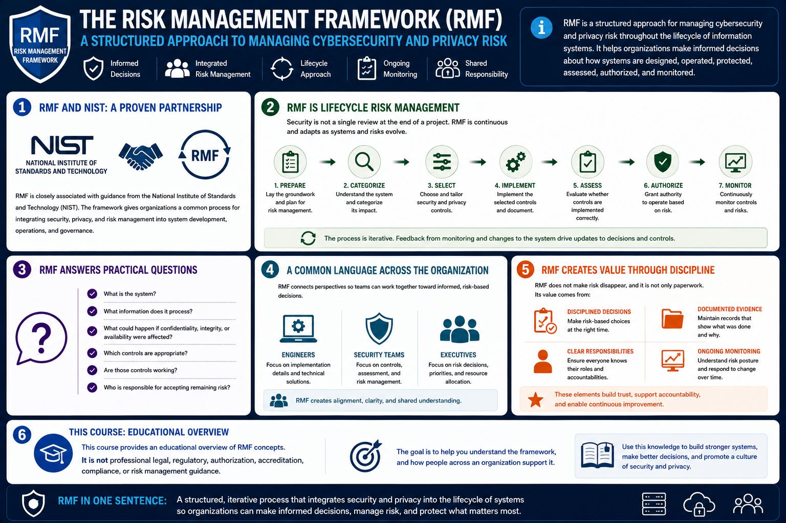

What Is RMF?
Introduction to RMF
Connecting to LMS... Progress: in progress
Version 1.0 | Date: 2026-06-16 | Educational overview of Risk Management Framework concepts.

Narration
The Risk Management Framework, or RMF, is a structured approach for managing cybersecurity and privacy risk throughout the lifecycle of information systems. It helps organizations make informed decisions about how systems are designed, operated, protected, assessed, authorized, and monitored.
RMF is closely associated with guidance from the National Institute of Standards and Technology, or NIST. The framework gives organizations a common process for integrating security, privacy, and risk management into system development, operations, and governance.
A useful way to understand RMF is to see it as lifecycle risk management. Security is not treated as a single review at the end of a project. Risk management begins before a system is built, continues while controls are implemented, and remains active while the system operates and changes.
RMF helps teams answer practical questions. What is the system? What information does it process? What could happen if confidentiality, integrity, or availability were affected? Which controls are appropriate? Are those controls working? Who is responsible for accepting remaining risk?
The framework also creates a common language between technical teams and leadership. Engineers may focus on implementation details, security teams may focus on controls and assessment, and executives may focus on risk decisions. RMF connects those perspectives.
RMF does not make risk disappear, and it is not only paperwork. Its value comes from disciplined decisions, documented evidence, clear responsibilities, and ongoing monitoring that helps the organization understand its risk posture.
This course provides an educational overview of RMF concepts. It is not professional legal, regulatory, authorization, accreditation, compliance, or risk management guidance. The goal is to help you understand the framework and how people across an organization support it.